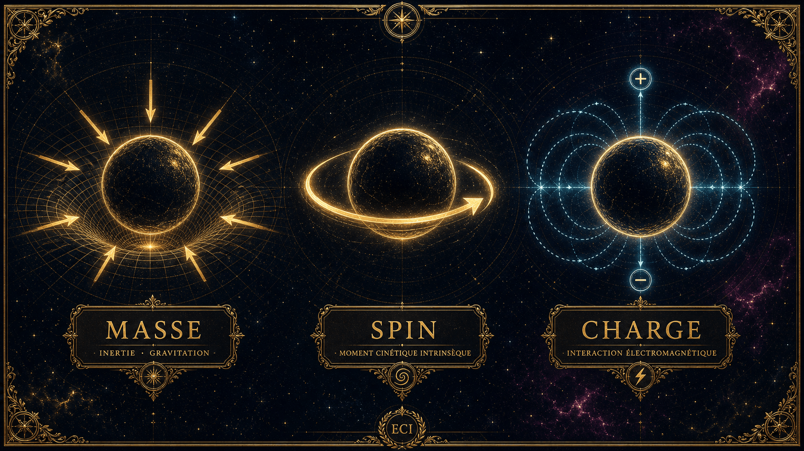

Avant l'atome, il y a la particule élémentaire. Toute particule de l'Univers est définie par trois propriétés intrinsèques — immuables, comme les coordonnées de son existence :
- La charge électrique — sa sensibilité à la force électromagnétique. Sans charge, une particule est invisible à l'électricité et au magnétisme. Unité : le coulomb (C).
- La masse — son inertie, son couplage à la gravité. On la mesure en kilogrammes, mais aussi via en eV/c², ou en unité de masse atomique.
- Le spin — son moment cinétique intrinsèque, une propriété purement quantique sans équivalent classique.

Pour la masse, deux unités cohabitent. L'équivalence masse-énergie permet d'exprimer une masse en électronvolts ; et pour les atomes, on utilise l'unité de masse atomique (u) :
L'énergie et la masse sont deux faces d'une même grandeur, reliées par le carré de la vitesse de la lumière . C'est ce qui permet d'exprimer la masse d'une particule en MeV/c², et de définir l'unité de masse atomique.
Ces unités donnent les masses des trois briques de l'atome : l'électron (≈ 0,511 MeV/c²), le proton (≈ 938,3 MeV/c²) et le neutron (≈ 939,6 MeV/c²) — le neutron, très légèrement plus lourd que le proton, ce qui rendra possible toute la radioactivité β.
Méthode · l'expérience de Stern et Gerlach (1922)
À Francfort, Otto Stern et Walther Gerlach envoient un faisceau d'atomes d'argent dans un champ magnétique inhomogène. Au lieu d'une tache continue, l'écran montre deux impacts séparés : le moment magnétique ne prend que des valeurs quantifiées. C'est la première preuve directe de la quantification spatiale du moment magnétique. Interprété d'abord dans le cadre du modèle de Bohr-Sommerfeld, ce résultat ne sera reconnu comme la signature du spin de l'électron qu'après l'hypothèse d'Uhlenbeck et Goudsmit, en 1925. Une plaque commémorative, à l'effigie des deux physiciens, marque aujourd'hui le siège de la Physikalische Verein à Francfort-sur-le-Main.
Le spin n'est pas une curiosité : c'est le socle de technologies entières —
- Spectroscopie RMN et imagerie IRM ;
- Laser, supraconductivité, superfluidité ;
- l'ordinateur quantique et son qubit.
La leçon
Les éléments chimiques du tableau constituent la matière baryonique. Un baryon est un hadron formé de trois quarks — le proton et le neutron en sont les exemples. Tout ce que touche la chimie est, au fond, un assemblage de quarks et d'électrons.